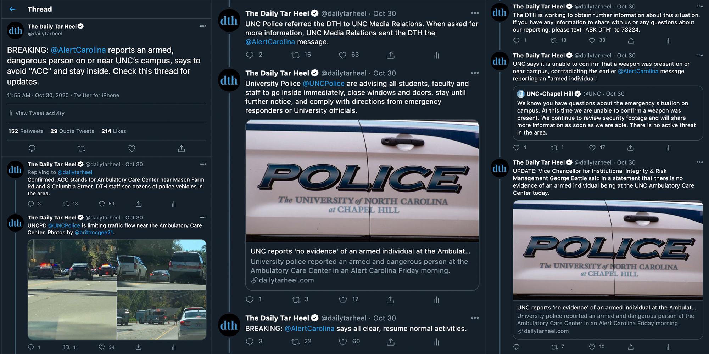

Tweet
For news feature story on international students' experiences studying during COVID-19:
For news story on North Carolina Gov. Roy Cooper's reeelection:
Newsletter
Here is a sample of DTH at a Glance, the newsletter I curate and write 2-3 times each week.
When I took over as The Daily Tar Heel's online editor this year, I completely redesigned this newsletter's format, style and voice, with user-friendliness and brand consistency in mind.
I'm pleased to say that since then, our open rate has shot up from the teens to the 20s and 30s.
Read here
Live tweets
Tweeted as UNC used its Alert Carolina emergency notification system to report an armed, dangerous person near campus.
Many found the University's crisis communications in this situation vague, contradictory and confusing.
Live tweeting this situation required caution, restraint, news judgment, clear communication and the ability to remain calm amid chaos.

For feature story on Black Lives Matter murals:
![The Instagram caption, which sits below a photo of a mural, reads: 'In
this historic moment, Black everything is in demand: the intellectual labor, the
artistic aesthetic, you name it. Across the country, companies and universities have
posted expressions of solidarity with Black lives. It's a milestone, but it's only
impactful if it actually improves the lives of Black people. How can we protect the
Black aesthetic of resistance from being co-opted and appropriated? Read more at the
link in our bio. Photo by @thejadewilson.' The post has 434 likes and three comments.](featureinstagram.png)
For commemorative feature story on the UNC women's soccer team:
For news feature story on UNC's new live mascot:
![The Facebook post reads: 'A new era in UNC live mascot history is coming to Chapel Hill
with the retirement of Rameses XXI, as a new ram named Otis prepares to make his appearance as
Rameses XXII. Paragraph break. Hogan's Magnolia View Farm is getting the young Rameses used to
receiving lots of attention. Paragraph break. 'I pet him and scratch him, hug on him, get him
used to being on the leash and give him lots of food,' James Hogan said. 'The key is really just
socialization and having them as comfortable around people as they are around animals. It's daily
interaction and lots of treats and really not all that different from what you do with your dog.''
The Facebook post has 146 reactions, 19 shares, 403 total engagements and 5,973 people reached.](newsfeaturefacebook-rameses.png)
For news feature story on a drive-in theater:
![The Instagram post reads: 'Drive-in theaters have been driven almost to extinction, but they've
made an improbable comback in North Carolina during the summer of COVID-19. In @foodtruck.flix's intriguing
variation, patrons get their munchies and drinks from local food trucks instead of a generic concession
stand. They maintain social distance by ordering from the Street Food Finder mobile app while staying in (or
sometimes, on) vehicles separated by empty spaces. Masked carhops deliver their orders. Paragraph break.
Food truck Flix is ongoing through August, every Friday and Saturday night at 7:00 p.m., at either the
Frontier in Research Triangle Park or Raleigh's Focus Church. The cost is $25 per car, with those profits
going to social justice causes.' The Instagram post has 787 likes and 32 comments.](newsfeature-theater.jpg)